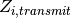
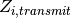
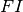
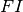

Simulation core components¶
The simulation component contains core functionality that models the behavior of a disease without any interventions and extended functionality to include migration, climate, or other input data to create a more realistic simulation. Disease transmission may be more or less complex depending on the disease being modeled.
Warning
If you modify the source code to add or remove configuration or campaign parameters, you may need to update the code used to produce the schema. You must also verify that your simulations are still scientifically valid.
Each generic EMOD simulation contains the following core base classes:
- Simulation
- Created by the simulation controller via a SimulationFactory with each run of EMOD.
- Node
- Corresponds to a geographic area. Each simulation maintains a collection of one or more nodes.
- IndividualHuman
- Represents a human being. Creates Susceptibility and Infection objects for the collection of individuals it maintains. The file name that defines this class is “Individual” and you may see it likewise shortened in diagrams.
- Susceptibility
- Manages an individual’s immunity.
- Infection
- Represents an individual’s infection with a disease.
For vector simulations, the following corresponding classes are derived from generic classes:
- SimulationVector
- Creates NodeVector objects instead of generic Node objects.
- NodeVector
- Creates IndividualHumanVector objects instead of generic IndividualHuman objects and creates and manages VectorPopulation objects to model the mosquito vectors.
- IndividualHumanVector
- Represents a human being and provides the additional layer of functionality for how vectors interact with individual humans.
- VectorPopulation
- The mosquito species at each node, which can be represented by a collection of cohorts that counts the population of a specific state of mosquitoes (VectorCohort) or by a collection of individual agent mosquitoes (VectorIndividual).
- SusceptibilityVector
- Represents a human being’s susceptibility to vector-borne disease.
- InfectionVector
- Represents a human being’s infection with a vector-borne disease.
Substitute these classes wherever you see the generic base classes in the architecture documentation.
For malaria simulations, the following corresponding classes are derived from vector classes:
- SimulationMalaria
- Creates NodeMalaria objects instead of generic Node objects.
- NodeMalaria
- Creates IndividualHumanMalaria objects instead of generic IndividualHuman objects and provides various malaria-specific counters for the purposes of reporting.
- IndividualHumanMalaria
- Represents a human being and provides the additional layer of functionality for how malaria vectors interact with individual humans.
- SusceptibilityMalaria
- Represents a human being’s susceptibility to malaria. It contains much of the intra-host model, by modeling the specific details of an individual’s immune system in the context of the malaria infection life cycle. It is highly configurable, and interacts closely with InfectionMalaria objects and the IndividualHumanMalaria object, its parent. From a software point of view, SusceptibilityMalaria derives from SusceptibilityVector, but in reality SusceptibilityVector provides minimal epidemiological functionality.
- InfectionMalaria
- Represents a human being’s infection with malaria. It is the other part of the detailed intra-host malaria model. It models the progression of the malaria parasite through sporozoite, schizont, hepatocyte, merozoite, and gametocyte stages. InfectionMalaria objects are contained with IndividualMalaria objects. There can be multiple such objects. They all interact closely with the SusceptibilityMalaria object. From a software point of view, InfectionMalaria derives from InfectionVector, but in reality InfectionVector provides minimal epidemiological functionality.
For generic simulations, human-to-human transmission uses a homogeneous contagion pool for each node. Every individual in the node sheds disease into the pool and acquires disease from the pool. For vector-borne diseases, disease transmission is more complex as it must take into account the vector life cycle. See Disease transmission.
The relationship between these classes is captured in the following figure.

Simulation components
After the simulation is initialized, all objects in the simulation are updated at each time step, typically a single day. Each object implements a method Update that advances the state of the objects it contains, as follows:
- Controller updates Simulation
- Simulation updates Nodes
- Node updates IndividualHuman
- IndividualHuman updates Susceptibility, Infections, and InterventionsContainer
- InterventionsContainer updates Interventions
Simulation¶
As a stochastic model, EMOD uses a random number seed for all simulations. The Simulation object has a data member (RNG) that is an object maintaining the state of the random number generator for the parent Simulation object. The only generator currently supported is pseudo-DES. The random seed is initialized from the configuration parameter Run_Number and from the process MPI rank. All child objects needing access to the RNG must be provided an appropriate (context) pointer by their owners.
The Simulation class contains the following methods:
| Method | Description |
|---|---|
| Populate() | Initializes the simulation. The Populate method initializes the simulation using both the configuration file and the demographic files. Populate calls through to populateFromDemographics to enable the Simulation object to create one or many Node objects populated with IndividualHumans as dictated by the demographics file, in conjunction with the sampling mode and value dictated by the configuration file. If the configuration file indicates that a migration and a climate model are to be used, those input file are also read. Populate also initializes all Reporters. |
| Update() | Advances the state of nodes. |

Simulation object hierarchy
For multi-core parallelization, the demographics file is read in order on each process and identity of each node and is compared with a policy assigning nodes to processes embodied in objects implementing InitialLoadBalancingScheme. If the initial load balancing scheme allows a node for the current rank, the node is created via addNewNodeFromDemographics. After all nodes have been created and propagated, the NodeRankMaps are merged across all processes. See Load-balancing file structure for more information.
Node¶
Nodes are model abstractions that represent a population of individuals that interact in a way that does not depend on their geographic location. However, they represent a geographic location with latitude and longitude coordinates, climate information, migration links to other nodes, and miscellaneous demographic information. The Node is always the container for IndividualHumans and the contagion pool. The Node provides important capabilities for how IndividualHumans are created and managed. It can also contain a Climate object and Migration links if those features are enabled. The climate and migration settings are initialized based on the information in the input data files.
The Node class contains the following methods:
| Method | Description |
|---|---|
| PopulateFromDemographics() | The entry point that invokes populateNewIndividualsFromDemographics(InitPop), which adds individuals to a simulation and initializes them. PopulateNewIndividualsFromBirth() operates similarly, but can use different distributions for demographics and initial infections. |
| Update() | Advances the state of individuals. |
| updateInfectivity() | The workhorse of the simulation, it processes the list of all individuals attached to the Node object and updates the force of infection data members in the contagion pool object. It calls a base class function updatePopulationStatistics, which processes all individuals, sets the counters for prevalence reporting, and calls IndividualHuman::GetInfectiousness for all IndividualHuman objects. The code in GetInfectiousness governs the interaction of the IndividualHuman with the contagion pool object. The rest of the code in updateInfectivity processes the contagion beyond individual contributions. This can include decay of persisting contagion, vector population dynamics, seasonality, etc. This is also where the population-summed infectivity must be scaled by the population in the case of density-independent transmission. |
| updateVitalDynamics() | Manages community level vital dynamics, primarily births, since deaths occur at the individual level. |
By default, an IndividualHuman object is created, tracked, and updated for every person within a node. To reduce memory usage and processing time, you may want to sample such that each IndividualHuman object represents multiple people. There are several different sampling strategies implemented, with different strategies better suited for different simulations. See Sampling for more information.
If migration is enabled, at the end of the Node update, the Node moves all migrating individuals to a separate migration queue for processing. Once the full simulation time step is completed, all migrating individuals are moved from the migration queue and added to their destination nodes.
IndividualHuman¶
The IndividualHuman class corresponds to human beings within the simulation. Individuals are always contained by a Node object. Each IndividualHuman object may represent one or more human beings, depending on the sampling strategy and value chosen.
The IndividualHuman class contains components for susceptibility, infection, and interventions. Infection and Susceptibility cooperate to represent the detailed dynamics of infection and immune mechanisms. Every IndividualHuman contains a Susceptibility object that represents the state of the immune system over time. Only an infected IndividualHuman contains an Infection object, and may contain multiple Infection objects.. Susceptibility is passed to initialize the infection immunology in Infection::InitInfectionImmunology(). The state of an individual’s susceptibility and infection are updated with Update() methods. Disease-specific models have additional derived classes with properties and methods to represent specifics of the disease biology.
The InterventionsContainer is the mediating structure for how interventions interrupt disease transmission or progression. Campaign distribution results in an Intervention object being added to an individual’s InterventionsContainer, where it remains unless and until it is removed. When an IndividualHuman calls Update(), the InterventionsContainer is updated and its effects are applied to the IndividualHuman. These effects are used in the individual, infection, and susceptibility update operations. If migration is enabled, at the end of each individual’s update step EMOD checks if the individual is scheduled for migration (IndividualHuman::CheckForMigration()), setting a flag accordingly.
The IndividualHuman class contains the following methods:
| Method | Description |
|---|---|
| Update() | Advances the state of both the infection and the immune system and then registers any necessary changes in an individual’s state resulting from those dynamics (that is, death, paralysis, or clearance). It also updates intrinsic vital dynamics, intervention effects, migration, and exposure to infectivity of the appropriate social network. |
| ExposeToInfectivity() | Passes the IndividualHuman to the ExposeIndividual() function if it is exposed to infectivity at a time step. |
| UpdateInfectiousness() | Advances the quantity of contagion deposited to the contagion pool by an IndividualHuman at each time step of their infectious period. This is explained in more detail below. |
Disease transmission¶
Transmission of disease is mediated through a pool mechanism which tracks abstract quantities of contagion. The pool mediates individual acquisition and transmission of infections as well as external processes that modify the infectivity dynamics external to individuals. The pool provides basic mechanisms for depositing, decaying, and querying quantities of contagion which are associated with a specific StrainIdentity. The pool internally manages a separate ContagionPopulation for each possible antigen identity. ContagionPopulations have further structure and manage an array of contagion quantities for each substrain identity.
Each IndividualHuman has a sampling weight  and a total infectiousness
and a total infectiousness  , the
rate at which contacts with the infectious individual become infected. This rate can be modified by
transmission-reducing immunity or heterogeneous contact rates, which are gathered in
, the
rate at which contacts with the infectious individual become infected. This rate can be modified by
transmission-reducing immunity or heterogeneous contact rates, which are gathered in
 , and the transmission-reducing effects of interventions, such as
transmission- blocking vaccines in the factor . The sampling weight
is not included in the probability of acquiring a new infection. Sample particles are
simulated as single individuals, their weighting is used to determine their effects upon
the rest of the simulation.The total infectiousness
, and the transmission-reducing effects of interventions, such as
transmission- blocking vaccines in the factor . The sampling weight
is not included in the probability of acquiring a new infection. Sample particles are
simulated as single individuals, their weighting is used to determine their effects upon
the rest of the simulation.The total infectiousness  of the local human population is then
calculated as:
of the local human population is then
calculated as:

For simulation of population density-independent transmission, individual infectiousness
includes the average contact rate of the infectious individual, so this total infectiousness is
divided by the population  to get the force of infection
to get the force of infection  for each
individual in the population. The base rate of acquisition of new infections per person is then
, which can be modified for each individual
for each
individual in the population. The base rate of acquisition of new infections per person is then
, which can be modified for each individual  by their characteristics
by their characteristics
 and interventions
and interventions  . Over a time step
. Over a time step  ,
the probability of an individual acquiring a new infection is then:
,
the probability of an individual acquiring a new infection is then:

A new infection receives an incubation period and infectious period from the input configuration (a
constant at present, but possibly from specified distributions in the future) and a counter tracks
the full latency, which is possible when simulating individual particles. After the incubation
period, the counter for the infectious period begins, during which time the infection contributes to
the individual’s infectiousness .
For vector-borne diseases, during an Update() for a node, the infectiousness of vectors is calculated on the local human population regarding the vector life cycle, along with the effects their interventions, such as bednets. Weather data from the Climate object is then used to update the available larval habitat for each local vector species. Multiple local vector species are supported, and after the weather updates, each vector species is advanced through a time step with the VectorPopulation::TimeStep() method. This calculates the life cycle and vector infection dynamics, along with the feeding cycle. It updates the indoor and outdoor bites, and indoor and outdoor infectious bites on the local human population. Each Individual in the local human population is then advanced in an Update(), propagating its infections forward in time, updating its interventions and infectivity, and acquiring any new infections.
NodeVector::updateInfectivity() calls the VectorPopulation::TimeStep() method for mortality adjustments due to weather and the human population and, when completed, processes each list. The effects of the human population are accounted for in VectorPopulation::Update_Host_Effects(), which determines the outcomes for indoor and outdoor attempted feeds on each individual human, and then on the human population as a whole, weighting by any heterogeneous biting. The processing order is:
- All infectious female mosquitoes
- All infected female mosquitoes
- All adult uninfected female mosquitoes
- All adult male mosquitoes
- Immature mosquitoes
- All mosquito larvae
- All mosquito eggs
After each list is updated, all indoor and outdoor bites, both infectious and non-infectious, are tallied and updated within the Node infectivity objects.
Within a list update, each cohort of identical-state mosquitoes or each individual-agent mosquito experiences risk of mortality, may progress through any stage of development, such as sporogony (for infected) or larval maturation (for larval), and may attempt a blood feed (for adult females). For mosquitoes attempting a blood feed, outcomes are governed by the calculated host effects, with sequential conditional draws for choice of host type, choice of indoor or outdoor feeding location, and feed outcome. The potential feed outcomes are die before feeding, no host found, die during feeding, die post-feeding, and successful feed. Successful feeds result in ovipositions, and eggs laid start the next generation of mosquitoes.